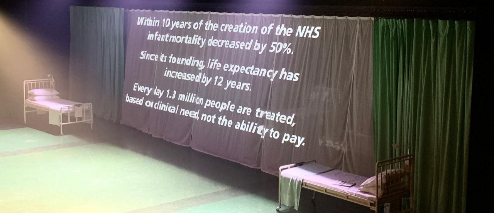

Matthew Gotham
Data/Stats Thoughts
The Impact of the NHS on Child Mortality
My aunt shared this photo, from the end of a production of Nye that she saw at the National Theatre, with the family WhatsApp group:
April 2024
Data Science Bootcamp Reports
Here are some explaratory data analyses that I wrote for my skills bootcamp in data science, funded by the Department for Education and run by HyperionDev/Imperial College London:
- An analysis of data from Ward's Automotive Yearbook 1985 (available from Kaggle here).
- An analysis of death rates in England and Wales from 1841 to 2020.
I completed the course in February 2023. You can view my portfolio here.